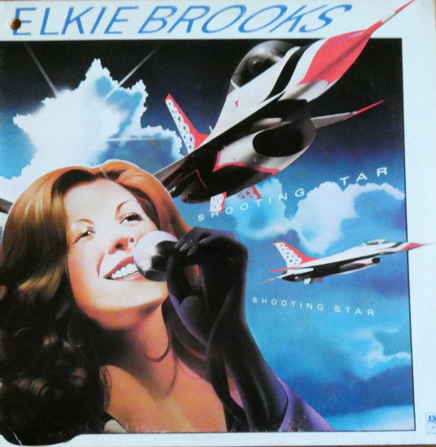

LP
Shooting Star
Elkie Brooks
Media: — · Sleeve: —
—
Personal
Discogs SuggestedCA$14.12
Discogs MedianCA$14.12
Discogs HighCA$14.12
- Physical Copy ID
- BB-LP-041
- Year
- 1978
- Label
- A&M Records
- Catalog #
- SP 4695
- Country
- CACanada
- Genre / Style
- Rock, Pop · Pop Rock